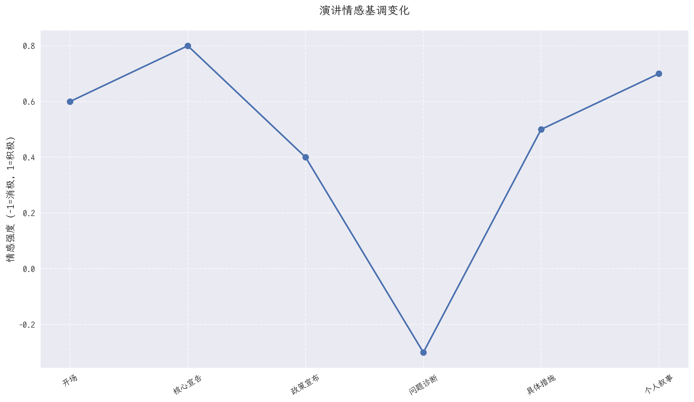
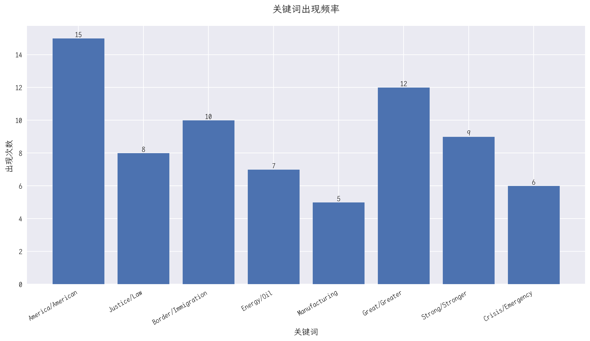
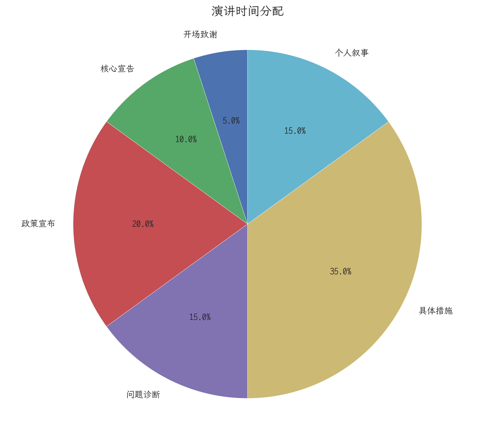
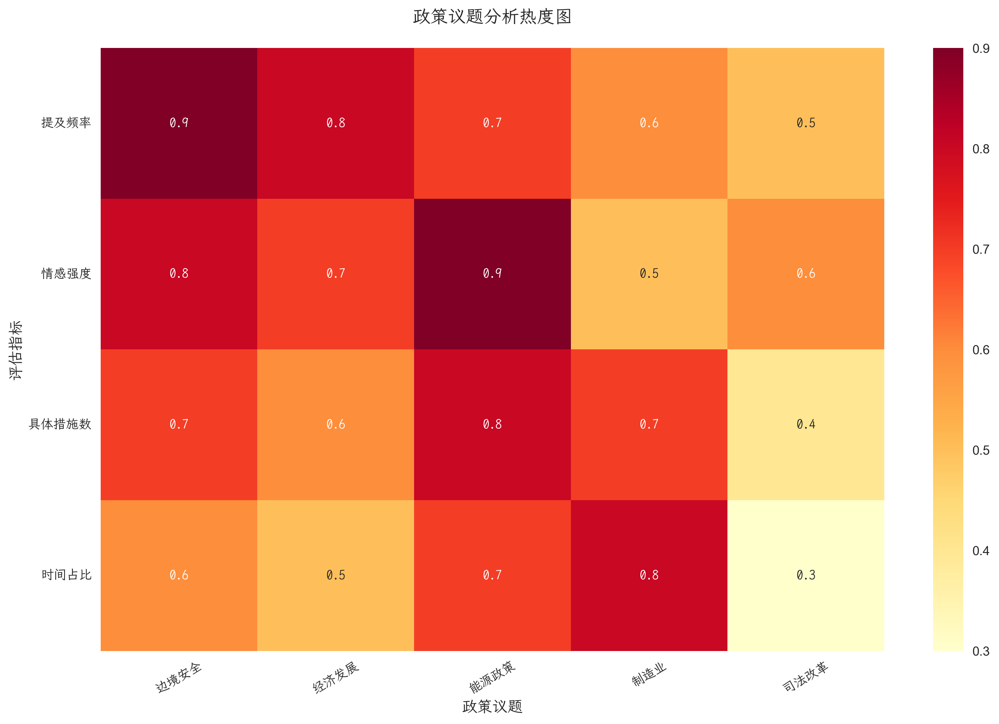

特朗普总统演讲深度分析
1. 演讲情感基调分析

演讲情感基调呈现明显的波动特征：
- 开场和核心宣告阶段保持积极正面
- 在问题诊断环节转向消极
- 政策宣布和个人叙事部分重回积极基调
2. 关键词分析

核心词汇使用特点：
- "America/American" 作为最高频词，强调民族认同
- 积极词汇（Great/Strong）使用频繁，营造乐观氛围
- 问题相关词汇（Crisis/Emergency）突出紧迫感
3. 演讲时间分配

时间分配策略：
- 具体措施部分占比最大（35%），突显实践导向
- 政策宣布（20%）和问题诊断（15%）比重适中
- 个人叙事部分（15%）增加感染力
4. 政策议题分析

政策关注度分析：
- 边境安全议题获得最高关注度
- 经济发展和能源政策紧随其后
- 各项政策都配有具体实施措施
5. 演讲策略总结
叙事结构
- 问题-解决方案模式
- 循序渐进的情感铺垫
- 首尾呼应的希望主题
修辞技巧
- 对比手法突出成效
- 个人化叙事增强共鸣
- 重复强调核心理念